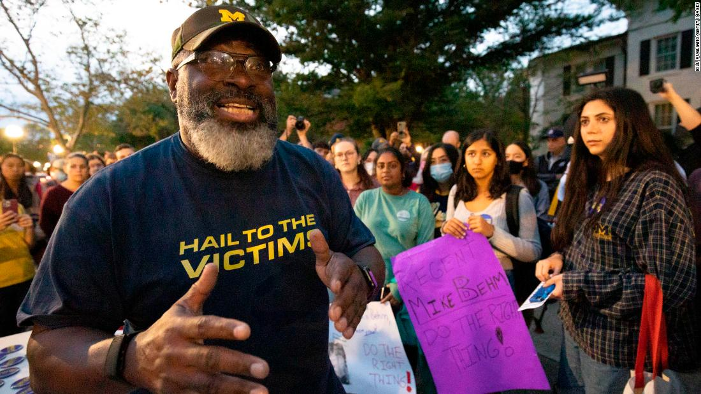

(CNN): Throughout the bitter winter, during rain and snow, Jon Vaughn has alternated between sleeping in a tent or a campervan outside former University of Michigan President Mark Schlissel's house.
A former University of Michigan and NFL football player, Vaughn is one of more than 1,000 people --- mostly men -- who says they were abused by athletics doctor Robert Anderson, who worked for the university from 1966 to 2003 treating students across sports including football, track, and wrestling.
Vaughn says he has spoken to students who feel harrassment is still a problem at the university.
Anderson, who died in 2008, subjected students, 90% of whom were men, to "sexually abusive conduct" and invasive exams, including unnecessary genital and rectal examinations, according to a 2021 independent report commissioned by the university. Many of Anderson's victims were Black -- and survivors say this has played a part in why the abuse was allowed to continue for decades.
In his roles at the university, including director of its health service, team physician for the athletic department and a clinical instructor at the university's medical school, Anderson abused men and women from different racial backgrounds, undergraduate and graduate students, student athletes -- including a two-time Super Bowl champion and former world-class wrestler -- and members of the lesbian, gay, bisexual, transgender, and queer community, the report found.
The university missed numerous opportunities to stop him over his 37 year long career, it concluded. This month the university announced a $490 million settlement with over a thousand victims of Anderson's alleged sexual abuse, pending approval by the Michigan Board of Regents and the claimants.
But despite the settlement, the University is still facing calls to take responsibility for its role in the abuse, which spanned more than three decades -- as well as the university's failures to address alleged present day sexual misconduct and abuse by and of students and university staff.
Victims say that despite knowledge of Dr. Anderson's predatory behavior, U of M failed to take any action, and instead chose to continue enabling Dr. Anderson's abuse of vulnerable young men until his voluntary retirement in 2003.
"They've shown that over the last half century... [they're] uninterested in student safety as a priority," Vaughn, who played for U of M from 1988 to 1990 said.
"They've shown the inability to police themselves on a consistent basis, as pertains to sexual assault," he said. Schlissel -- who was fired this month from his position as President following an anonymous complaint suggesting that he "may have been involved in an inappropriate relationship with a University employee" -- has apologized for Anderson's "tragic misconduct," and said in a statement that the university is committed to resolving victims' claims.
But Vaughn, 51, who was recently diagnosed with thyroid cancer and has been protesting for more than 100 days says he will continue to sleep outside the university president's house until the University of Michigan addresses historic and alleged present day abuse, after realizing how "acute" issues of sexual assault, violence and rape are on campus.
Vaughn is also one of many involved in hundreds of individual lawsuits and a class-action lawsuits filed against the University and the Board of Regents by survivors.
Black men are treated differently
The allegations against Anderson mirror those against disgraced USA Gymnastics doctor Larry Nassar at Michigan State University and Richard Strauss at Ohio State University. They too were doctors who abused their trusted positions to sexually exploit college students and athletes.
With more than a thousand people -- mostly men -- coming forward to say they were abused by Anderson, attorneys representing the victims say it may be the largest case of sex abuse by a single person in the US. The scale of the alleged abuse surpasses that at Michigan State, Ohio State, and similar incidents at other US universities.
But the case has received nowhere near as much media coverage as that of the abuse of Nassar. A disproportionate number of the victims are African American, Vaughn told CNN.
"I don't think the world right now is ready to complete that spectrum of the face of abuse and include African-American men," Vaughn told CNN.
Attorney Mike Cox, who is representing 174 victims in confidential federal court mediation with the University of Michigan told CNN that some 40% of the 1000 Anderson victims are African American men. "We have not done a formal analysis because all are victims and viewed equally in that sense. But clearly the amount of African American victim survivors is much, much higher than their numbers in American society," Cox told CNN over email.
Black Americans represent just 13.4% of the American population.
The percentage of African American survivors is also "dramatically higher" than their percentages as part of the UM student base, Cox said.
The University of Michigan agreed to work toward a goal of 10% African American enrollment by 1973, but did not reach this goal: Black student enrollment had declined by 1987 to 5.3% of the student body from the high of 7.7% in 1976 and never reached the 10% goal targeted by administrators in the early '70's.
From the 1980s until 1996, there was a 10% increase in African American student enrollment. However, efforts to increase African American enrollment to reflect the Michigan state's 14% Black population have been unsuccessful, according to the university.
Vaughn said it took years for him to even recognize what had happened to him as abuse, and that in communities of color, "for men to even discuss their abuse is seen as a weakness. In those communities, you're forced to be tough and strong."
"We've been fighting to have a voice, just typically in this country, for over 400 years, we're constantly and have historically been marginalized, or dehumanized in so many ways. So I really think those two factors create this perfect storm," he said.
Attorney Parker Stinar, who represents around 200 of the survivors, agreed, adding that Anderson's case has not received anywhere near as much media coverage or public recognition as other sex abuse cases because the vast majority of survivors are older, Black men.
"For Larry Nassar, you had prominently White, 30-year-old women, whereas for Dr. Anderson, the vast majority of the survivors are Black and in their 50s, 60s and 70s. This case is overlooked in part because of that," he told CNN.
-Tommy Curry, professor of philosophy and personal Chair of Africana Philosophy and Black Male Studies at The University of Edinburgh
"I think our society looks down on men who are sexually abused, let alone big, strong, athletic, Black men who are sexually abused, compared to female survivors of abuse," Stinar added. "Because they have this societal influence that asks men: How can they allow themselves to be sexually abused?"
Rebecca Wanzo, professor of Women, Gender, and Sexuality Studies at Washington University, St. Louis, told CNN that race plays a significant part in whether or how violence and abuse is reported by the media.
"If you don't have someone who's the face of something that they [the media] put forward, or seems like an ideal victim that people want to tell a story about, historically, that is something that can really affect the ability of a story to travel," she explained.
This, she said, is often an issue when it comes to reporting issues like sexual abuse and murder. "Systemic violence often tends to get less attention, which is why violence against people of color, systemic violence in general, in terms of class and other factors, isn't reported," she said.
Racist stereotypes
"We don't have a language to talk about Black as rapeable in the US, because the racist stereotypes of Black men as the rapist and as violent stops us from looking at data that's been collected by the CDC for the last decade," Tommy Curry, professor of philosophy and personal Chair of Africana Philosophy and Black Male Studies at The University of Edinburgh told CNN.
Nearly 1 in 5 (19.4%) non-Hispanic Black men have experienced contact sexual violence -- which includes rape, being made to penetrate someone else, sexual coercion, and unwanted sexual contact -- in their lifetime, according to the CDC's National Intimate Partner and Sexual Violence Survey 2010-2012, which is the latest published data broken out by race or ethnicity.
Social psychology data shows "Black men are always perceived as being taller, more aggressive, or violent, more prone to conflict, more athletic than they actually are," Curry said.
"And it's those social perceptions that have been linked to forms of dehumanization -- likening them to apes, sorts of primal beasts and animals -- that fit into how we think of Black men, both as athletes and as kind of super predators, as superhuman."
Former gymnast Trinea Gonczar, who testified against Larry Nassar, told CNN that in her work supporting victims of sexual abuse, she has learned "that most men, no matter what, if they've been assaulted, they won't report based on more shame."
Nassar, the longtime doctor for the USA Gymnastics team and Michigan State University, is serving a 60-year sentence in federal prison on child pornography charges, and was also sentenced to a 40-to-175 year state prison sentence in Michigan after pleading guilty to seven counts of criminal sexual conduct.
Gonczar has been spending time with Vaughn in his protest to show solidarity with abuse survivors at the University of Michigan.
"In my case, as a privileged woman, my perpetrator is in jail, we received a settlement. I'm White, and I come from an expensive, per se, sport: you have to have money to have to be in that sport," Gonczar said. Gonczar now works as director of development at the Avalon Healing Center, which provides support for victims of sexual abuse.
"I've had to learn that I am a privileged, White person, and all abuse is not the same," she said. There are several reasons why Black men choose not to report abuse, Curry told CNN.
"We know from interviews with Black male victims that it's not only the pressures of not being believed -- but it's also being perceived as the aggressor," he explained.
Curry said that his research had shown that in domestic violence cases, Black men would stay in situations of abuse, or they would not report victimization.
-Jon Vaughn, former University of Michigan and NFL football player
"They fear that the police or the criminal justice system or society is going to view them as the perpetrator and they'll be criminalized even harsher than the kinds of abuse and violence that they suffer," Curry said.
"When Black men report that they have been victimized by others, "different stereotypes activate", Curry added.
"A lot of racists would say, 'No, he was really the aggressor, he tried to rape me, I wouldn't rape a man. It wasn't me. This person was violent or aggressive, or he's a drug dealer, a thief.'
"All these racial stereotypes are utilized to undercut the credibility of Black men who are victims in ways that other groups don't have to deal with," he said.
Conditions that enable abuse
Attorney Stephen Estey told CNN that Anderson was easily able to take advantage of his victims. "Some of these men, they came from the inner city [which had] not the best healthcare in the back of the day," Estey, who represents some 80 survivors, said.
"Some of them never had a physical [examination], and so they didn't know what a physical should have been. And Dr. Anderson would tell them, if you want to play football, it's part of the process," Estey told CNN. Wanzo said that a nationwide commitment to protecting athletic programs "particularly makes Black people vulnerable in the US because they are disproportionately often in some of these programs."
Anderson first served as a University Health Services doctor and was moved to the Athletic Department in 1981 after "credible reports of misconduct" were relayed to the then Assistant Vice President of Student Services Thomas Easthope in late 1978 or 1979, according to the WilmerHale report.
"The fact that they switched him out of general care to the athletic program as if they [athletes] were sort of disposable people says a lot about how the institution thought about how to deal with the problem person: they value athletics as institution, but the people who participate in athletics and make some money are disposable."
Vaughn told CNN that there are a "number of dynamics" aside from race that help perpetuate "this culture of abuse in sport."
"I think it is the athlete's dedication to this specific sport, and the overwhelming trust that they tend to have in their coaches and trainers because of the focus that it takes to be successful in sport," Vaughn said. Coaches and medical staff are often the most powerful people in a child and student athlete's life, he added. If sports create the perfect conditions for abuse, then institutions are failing to regulate themselves, survivors say.
"It's really the institutions that are protecting their brands, and the position that they hold within that sport, because they really want that sport to be a catalyst for their financial gain instead of taking concern about their sports doctors who are actually predators," Gonczar, a gymnast who was treated by Nassar for 15 years, and who estimates that she was molested some 856 times, said.
A number of the women said they had reported Nassar's abuse previously but that the systems of authority, including USA Gymnastics, the US Olympic and Paralympic Committee and Michigan State University, did not take their concerns seriously.
"Absolutely not enough has changed," Gonczar said.
"In the US it's taking so long to just simply get these big institutions to be aware and to be willing to be accountable and transparent, and to have people in the leadership roles that are willing to facilitate that," Gonczar warned.
Campus abuse between students is an ongoing issue
The University of Michigan finalized a new sexual and gender based misconduct policy in September, but critics say abuse and assault between students and by university staff still isn't being dealt with well enough.
Vaughn said that since he has been protesting, he has been approached by students who have told him of their own experiences of sexual assault and abuse at the university.
There were 157 allegations of sexual assault reported to the University's Office for Institutional Equity (OIE) from July 1, 2019 through June 30, 2020, according to its yearly report.
The University's Division of Public Safety and Security, which records incidents reported to the DPSS, law enforcement agencies and campus security authorities, described 18 on campus rapes and 31 reports of fondling not associated with Anderson in 2020.
Some 106 reports of sexual assault were made to the University's Sexual Assault Prevention and Awareness Center (SAPAC) in 2020, down from 151 in 2019 and 168 in 2018.
There were 77 reported instances of sexual harassment and 57 reports of stalking, according to the University's Division of Public Safety and Security, which provided the data as "additional information regarding crime reports on campus."
Campus enrollment in 2019 stood at 48,090 students, and 47,907 enrolled in 2020.
"All the reporting agencies within the university have essentially failed all the students and all the student athletes, because they've done nothing to support in any consistent manner, or protect in any consistent manner," Vaughn said.
"Professors have said if you support or even help report a student's standpoint, it's like a career suicide," he added.
Some 42.4 percent of Michigan students said they had experienced at least one type of harassing behavior since entering school, and more than a quarter (26.9 percent) of undergraduate women reported nonconsensual sexual contact, according to a campus climate survey regarding sexual misconduct.
Out of women who say they experienced harassment, 8.9 percent of Michigan undergraduates reported the person was a teacher, advisor, boss, supervisor, or co-worker compared to an average of 4.8 percent of undergraduates and across the 33 schools surveyed in the overall survey, which looked at responses from a total of 181,752 students from 33 colleges and universities.
Some 31.8 percent of graduate or professional Michigan students reported their harasser to be a teacher, advisor, boss, supervisor, or co-worker, compared to an average 16.5 percent in the overall survey.
The overall survey found that the 33 schools surveyed, more than half of undergraduate women (59.2%) and transgender, genderqueer, and non-binary students (65.1%) reported experiencing at least one harassing behavior. "I speak to a lot of students, many of them feel like with the assaults that have happened to them, that the university has not been able to deal with it properly," Charlie Kolean, chairman of Michigan Students Against Sexual Assault told CNN.
Attendees add their signatures to a board in support of survivors of sexual abuse at a vigil outside the home of outgoing University of Michigan President Mark Schlissel October 13, 2021 in Ann Arbor, Michigan.
"Typically, a case will not be criminally referred. And additionally, a lot of survivors from assault, they don't want to go through the university's process reporting the assault, because it is fairly arduous," he added.
Emma Sandberg, a former student and founder of activism group Roe v. Rape told CNN: "Overall, it is very difficult to be a survivor at U of M. The sexual assault prevention center doesn't provide any real resources, university leadership has engaged in sexual misconduct themselves, and those who go through the all-consuming Title IX process are traumatized by it and rarely receive justice, support, or validation.
"We need a supportive center for survivors, not just a preventative one, and we need more effective prevention methods at all levels," Sandberg, who graduated in in 2021, said.
In addition to Anderson, at least five current and former university professors and officials have faced accusations of sexual harassment or abuse in the last few years.
In a statement to CNN, Rick Fitzgerald, associate vice president of Public Affairs and Internal Communications at the University of Michigan said: "We encourage every incident of misconduct to be reported and we take action," pointing towards the university's annual report for further details.
"SAPAC has a 30-year history of supporting and advocating for survivors of sexual misconduct, through a range of supportive services, based on individual needs," he said, pointing towards the university's confidential resources for students and staff.
He added: "The University of Michigan always has taken sexual misconduct seriously and we have been increasing our efforts steadily," and that a Sexual Assault Prevention and Awareness Center has been on campus for almost 40 years.
Fitzgerald added that any case that involves criminal behavior is "first turned over to police and the ECRT investigation is put on hold so that criminal activity can always be addressed first."
Vaughn wants the university to overhaul its approach to misconduct.
"You cannot only celebrate parts of your history, you must deal with your entire history in order to root it out and change that culture," he said.
"Because the longer you ignore it, the more you perpetuate it and the more it empowers other predators, because they're watching the lack of discipline, or consequences for serial predators and rapists that then gives others the green light to make those decisions and prey on young men and young women."
Co-lead class counsel attorney E. Powell Miller told CNN his team is seeking "class action relief for reforms, policies and procedures to prevent an Anderson problem from occurring again."
Vaughn has been protesting through harsh conditions at the University of Michigan.
Vaughn has slept in a tent and later, a trailer, to protest at the University over issues of sexual abuse and assault.
Attorney Jonathan Selbin, co-lead class counsel in a class action suit against the University, told CNN: "While paying money to the victims is a critical first step, U of M must also commit to system-wide changes that bring all of the stakeholders together to reform the campus and institutional culture and prevent abuses like this from ever occurring again."
Vaughn wants the university to create programs that empower students to report instances of sexual violence, and strengthen mechanisms to protect students.
Last July, the university announced revisions to how it will address sexual misconduct, including the creation of a new office with "significant" new resources for support, education and prevention. The office was launched in August.
"I knew that there was nothing that I could do in my protest to change what happened to me. But we could uncover the truth here at Michigan, and also make this place safer for now, and in the future, so that these atrocities don't continue to happen," Vaughn said.
"We want to change the narrative, as well as the culture. So until that's done, I won't be leaving."